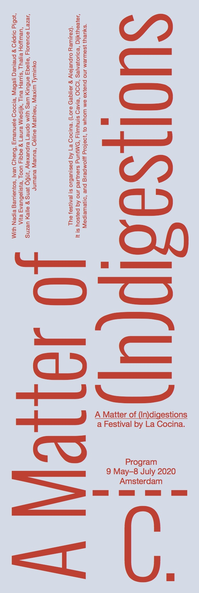
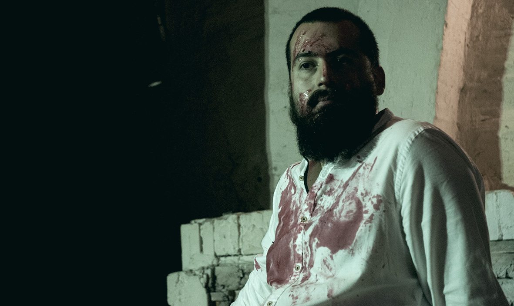
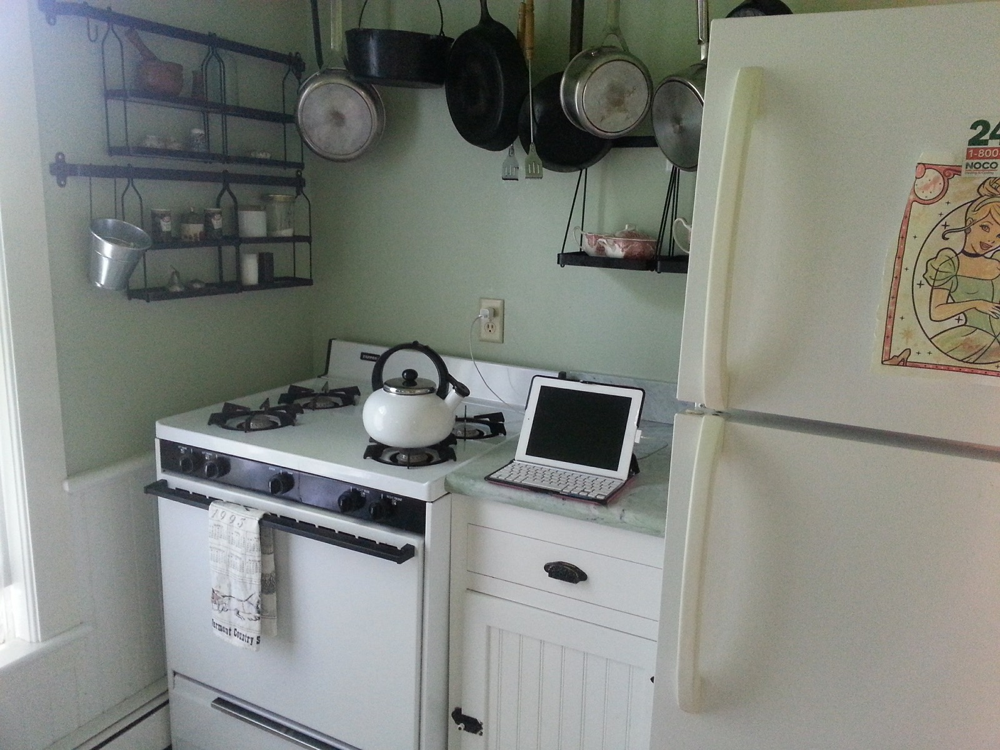

Virginities
05/01/21La Cocina
By: Ivan Cheng
by La Cocina
 Visible ship tracks in the Nothern Pacific, on March 4th, 2009
Visible ship tracks in the Nothern Pacific, on March 4th, 2009Como las brasas que arden / mientras Ariel y Calibán / sostienen la soledad del muro oeste. / Acuclillados uno frente al otro. / Como quien busca su rostro en el corazón de la cebolla. / Hurgando, hurgando / pese al frío y los gases: / Un abrigo de fantasía.
Like embers that burn / while Ariel and Caliban / hold up the solitude of the western wall. / Crouched down, one in front of the other. / Like someone looking for his face / in the heart of an onion. / Poking, poking / despite the cold and fumes: / a blanket of fantasy.
These verses come from a poem entitled “Ni Crudo ni cocido'' written by Roberto Bolaño in the 1980s. Inspired by The Tempest – perhaps the last play written by Shakespeare as a single writer–, it is used by Bolaño to summon his everlasting disenchantment for a Latinamerica consumed by its own paradoxes. There have been at least two seemingly unrelated events that made these lines possible. On the one hand, Salvador Ayende had to rise to power only to be overthrown by a military coup in 1973: an event that would greatly shape the universe in which the poet nurtured his imagination. On the other hand, the figure of the cannibal had to have settled in the collective imagination. Ambiguous figure oscillating between an emancipated slave and an uncivilized glutton: Caliban the cannibal “holding up the solitude of the western wall”. The cannibal – and all its metaphorical palate – is perhaps an inevitable companion when we venture into a discussion about consumption. Neither fixed nor single, they gladly exist in the fringes between culture and nature – devouring, revoking arbitrary divisions, one bite at a time. Such a character helps us acknowledge that life entails above all a sort of relentless-cannibalia in which humans and non-humans are inextricably involved. The title chosen by the poet, ‘Half-Cooked’ – neither raw nor cooked –, suggests a liminal state: half-done we remain, always in transit, insatiable. As if Ayende’s aborted project and the Haitian revolution had become ingredients fermented by time, fetched across the oceans, flavored in someone’s mind, preserved in data servers: which we consume today by chance. NoteWe’re eager to share the archive of the festival 'A Matter of (In)digestions', which includes video and photo documentation, online contributions, written and visual essays, and a sound piece. Follow the LINK
Till soon!
Stay strong and best start of the year, everyone
Hey Honey (essay):
A speculative domestic techno-culture parody about kitchen devices who love to gossip Hey Honey is an essay by Klasien van de Zandschulp that invites us to slip into the space of the kitchen, and listen to the voices behind our backs, in a language beyond human grasp. Taking kitchenware as a point of departure and combining fictional dialogues, historical references and critical thoughts, Klasien raises awareness on the way in which machinic communications have permeated our daily life. Hey Honey is a playful, yet urgent call to speculate on the often overlooked outcomes propelled by our increasingly hyperconnected world.

About the artist
Klasien van de Zandschulp designs story-based and participatory experiences, blending digital/physical and online/offline interactions. Her work explores sensory design, embodiment, rituals, augmented realities, human interaction and (radical) thoughts around our daily technology consumption. Van de Zandschulp is fellow at the Institute of Network Cultures (NL, 2020), the Sundance New Frontier Story Lab (USA, 2019) and guest researcher at the Artez Future Makers Insitute - (NL, 2018, 2019).
Route ⦁ OCCII ⦁ Amstelveenseweg 134, 1075 XL Amsterdam
In The Diluted Hours, Magali Daniaux & Cédric Pigot take us on a poetic investigation of the Arctic in which the immemorial time of the glaciers meets the radical time of a ritual fire. In their multimedia performance, sounds of prepared guitar and manipulated objects fuse with electronic loops and Magali’s incantatory voice: calling to the stars, to nature and animals, to human beings and their bodies.

What kind of value negotiation occurs in a subcultural space? How fluid is the role of a stakeholder under such conditions? Virginities is a performance situation by Ivan Cheng which addresses the way authenticity is constructed. In the last years, he has been developing a practice using an inhaling scream and mixing microphone feedback. Enmeshing this tool with new texts, he negotiates a suspicion for bodily modes of subsuming and consuming.

About the artists
Ivan Cheng focuses, within his practice, on misunderstanding, abrasion, and desire in the act of reading. Cheng makes work that is largely context-specific, with performative situations that are largely ephemeral and intended to be held by hearsay and revisionism. Interested in the deconstructed gesamtkunstwerk and the visible and invisible infrastructures that could distribute it, he works with his own trained and historied performing body, and embeds the identities of other performers and non-performers in the work through rehearsal, dialogue, and entrustment. He also works as a performer, clarinetist, curator, and writer, initiating project space bologna.cc. http://ivancheng.com/
Since they met in 2001, the joint work of Magali Daniaux & Cédric Pigot bears the dual hallmark of experimentation and performance. Their pieces bring together various media, associating elements from opposite ranges, with a taste for connections between Sci-Fi and documentary forms, high-tech engineering and fantasy tales, heavyweight materials, and fleeting sensations. Starting with installations and objects, their work soon included experimental actions and more immaterial artistic gestures. Videos, sound art, music, poetry, olfactive research, virtual works bordering the digital arts have formed, over the past years, a cycle of works dealing with climate change, economic, political, and geo-strategic issues, urban development and food management. daniauxpigot.com
We are pleased to launch the third contribution to our online program: “A Musical Piece for Marimba and One Million Colored Squares” by Maxim Tyminko.
Exploring algorithmic storytelling, the artist “transforms” the information of a visual sequence into a musical composition.
For this work, Tyminko has designed a javascript program that reads and performs, in real-time and in a random manner, a sequence of images created during ‘Place: an incomplete History’, an on-line social experiment organized by Reddit in 2017. Using an online canvas and a 16-color palette, Reddit invited millions of users over the course of 72 hours, to produce an image that evolves in time. Only constraint: each user could only draw one pixel every 5 minutes. Promptly, people began to work together. The resulting image conveys a wide range of connotations, including political, social, and aesthetic.
In Tyminko’s work, each pixel is translated into a synthesized tone, producing a complex atonal musical composition. Placed with extreme care and being part of a bigger visual plan, each pixel, which has been scaled up into a colored square, becomes a picture in itself. The sequence of those ‘pictures’ produces a meaningful, yet abstract, story.
Discover the eighth entry of Sebastián González de Gortari's diary, 'Devouring Secret(e)s'.
'Devouring Secret(e)s' is comprised of eight entries which were written in the aftermath of the performance of a lecture that the artist presented last December as part of ‘A Matter of (In)digestion’, our new season and research theme. We release the entries one by one, every Thursday.
Read the previous entries HERE
Co-founded by Lore Gablier & Alejandro Ramírez, La Cocina is a platform for artistic and curatorial research that explores the entanglement of modernity, progress and food — opening new cultural perspectives and fostering critical engagement.
About us:
Lore is a curator, editor, and cultural project manager with over fifteen years of international experience. Her work explores the intersections between contemporary art, collective practices, and societal issues, fostering collaborative and interdisciplinary approaches. LinkedIn
Alejandro - Trained as a filmmaker and self-taught as a cook. I work as an investigator with a pronounced taste for dead-ends and wormholes. Through my artistic and curatorial practice, I venture through stories and history, incorporating my interests in food andlandscape, in an attempt to forge critical narratives. Over the years, my oeuvre has developed into films, film/photography installations, and programming. My work has been shown internationally, notably in Italy, Taiwan, Colombia and The Netherlands. www.alejandroramirez.info
Thanks to Virginie Gauthier for the graphic design
Web programming by Maxim Tyminko


